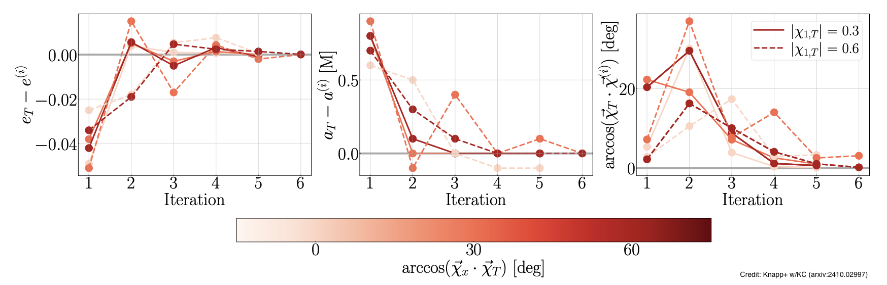

Waveform modeling and binary dynamics
The analysis of LIGO (and eventually LISA) data hinges on accurate models for the gravitational wave signal emitted during the coalescence of black holes and neutron stars. General Relativity provides the theoretical framework for these signals as well as the full spacetime dynamics, most accurately accessible through numerical relativity simulations. We are interested in understanding the non-linear dynamics of the general relativistic two-body problem and exploring the rich phenomenology they imprint on signals that can be detected by LIGO or next-generation ground- and space-based detectors. We construct models that can be used for analyzing compact binary data, including effects such as higher-order modes, eccentricity, and spin-induced orbital precession.
Numerical relativity simulations evolve the Einstein equations and produce exact (to within numerical error) solutions for the binary dynamics and emitted signal of merging black holes. However, due to the complexity of the equations, achieving initial conditions that correspond to a desired binary configuration is not straightforward. Caltech graduate student Taylor Knapp led a study that devised and validated an iterative method that solves this problem and can result in simulations with target binary parameters, for example the eccentricity and semi-major axis of the binary orbit, or the direction of the spins of the black holes.